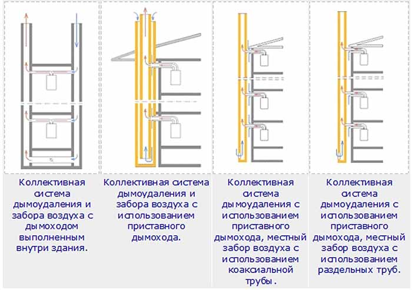

Котлы для поквартирного отопления
Настенные газовые котлы - это как "мини котельная", т.к. в небольшом корпусе компактно расположены все основные элементы котельной: Горелка, Теплообменник, Блок управления, Циркуляционный насос, Расширительный бак, и конечно, система обеспечивающая безопасную работу котла, манометр, термометр, и многие другие элементы, без которых не обходится работа нормальной котельной.
При том, что в настенных газовых котлах воплотились в жизнь самые передовые технические разработки в области отопления стоимость "настенников" часто в 1,5-2 раза ниже, чем у напольных котлов. Другое существенное преимущество настенных газовых котлов - простота монтажа. Нередко покупатели считают, что удобство монтажа это достоинство, которое должно волновать только монтажников. Это не совсем так, ведь сумма, которую придется заплатить реальному потребителю за установку настенного газового котла или за монтаж котельной, где отдельно устанавливаются котел, бойлер, насосы, расширительный бак и многое другое, отличается очень существенно. Компактность и возможность вписать настенный газовый котел практически в любой интерьер - еще один плюс этого класса котлов.
По способу удаления отходящих газов все настенные газовые котлы можно разделить на котлы с естественной тягой т.н. "атмосферные" (удаление отходящих газов происходит за счет тяги, создаваемой в дымоходе) и котлы с принудительной тягой т.н. "турбированные" (удаление отходящих газов с помощью встроенного в котел вентилятора).
Большинство фирм, производящих настенные газовые котлы, выпускают модели, как с естественной тягой, так и с принудительной. Котлы с естественной тягой многим хорошо знакомы и дымоход над крышей никого не удивляет. Настенные газовые котлы с принудительной тягой появились позже. Такие модели настенных газовых котлов могут использоваться в помещениях без традиционного дымохода, так как продукты сгорания в этом случае выводятся через специальный коаксиальный дымоход, для которого достаточно сделать только отверстие в наружной стене. Коаксиальный дымоход еще часто называют "труба в трубе". По внутренней трубе такого дымохода продукты сгорания выводятся на улицу с помощью вентилятора, а по внешней поступает воздух. Настенные газовые котлы с принудительным отводом продуктов сгорания не сжигают кислород из помещения, не требуют дополнительного притока холодного воздуха в здание с улицы для поддержания процесса горения, позволяют снизить капиталовложения при установке, т.к. не нужно изготавливать дорогостоящий традиционный дымоход, вместо которого используется короткий и недорогой коаксиальный.
Настенные газовые котлы с принудительной тягой используются и в случае, когда есть традиционный дымоход, но забор воздуха для горения из помещения нежелателен.
По типу розжига, настенные газовые котлы могут быть с электрическим или с пьезорозжигом, но последние, это уже большая редкость.
Настенные газовые котлы с электророзжигом экономичнее, т.к. отсутствует запальник с постоянно горящим пламенем. Благодаря отсутствию постоянно горящего фитилька, использование настенных газовых котлов с электророзжигом позволяет существенно снизить расход газа, что наиболее актуально при использовании сжиженного газа. Есть и еще один плюс настенных газовых котлов с электророзжигом - при временном прекращении электропитания котел автоматически включится при возобновлении подачи электроэнергии, а модель с пьезорозжигом придется включать вручную.
По виду горелки, настенные газовые котлы могут быть разделены на два типа: с обычной и с модуляционной горелкой. Модуляционная горелка обеспечивает наиболее экономичный режим работы, т.к. котел автоматически регулирует свою мощность в зависимости от потребности в тепле. Кроме того, модуляционная горелка обеспечивает и максимальный комфорт в режиме ГВС, позволяя поддерживать температуру горячей воды на постоянном, заданном уровне.
Большинство настенных газовых котлов оснащено устройствами, обеспечивающими их безопасную эксплуатацию. Так датчик наличия пламени при пропадании пламени отключает подачу газа, блокировочный термостат при аварийном повышении температуры котловой воды отключает котел, специальное устройство отключает котел при пропадании электропитания, другое устройство блокирует котел при отключении газа. Присутствует и устройство отключения котла при снижении объема теплоносителя ниже нормы и датчик контроля тяги.
Диапазон мощностей настенных газовых котлов производимых на сегодняшний день составляет от 11 до 42 кВт, с минимальной рабочей мощностью от 3 до 15 кВт. Площадь большинства квартир составляет от 30 до 150 м2, поэтому в поквартирном отоплении целесообразно устанавливать котлы с номинальной мощность не более 24кВт. * В основном застройщик сам выбирает и закладывает в проект модели и соответственно производителя котлов и выбор чаще всего останавливается на более бюджетных моделях, что не всегда отвечает желаниям и потребностям будущих собственников квартир.
Дымоудаление в домах с поквартирным отоплением
Настенные газовые котлы - это как "мини котельная", т.к. в небольшом корпусе компактно расположены все основные элементы котельной: Горелка, Теплообменник, Блок управления, Циркуляционный насос, Расширительный бак, и конечно, система обеспечивающая безопасную работу котла, манометр, термометр, и многие другие элементы, без которых не обходится работа нормальной котельной.
